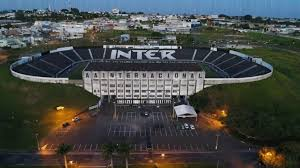
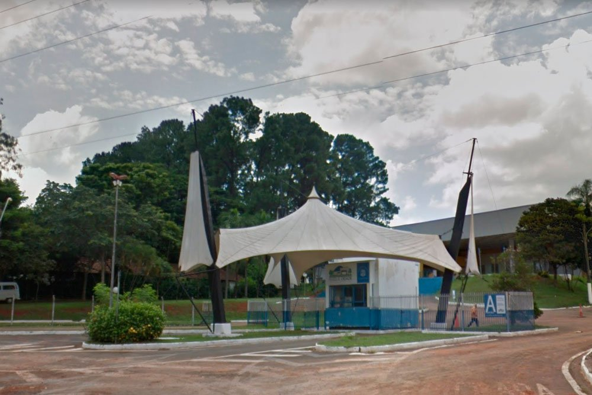

Esportes em Limeira
Limeira é uma cidade que oferece diversas opções para a prática de esportes, com infraestrutura de qualidade e apoio a atividades para todas as idades. O município conta com centros esportivos, campos de futebol, quadras de tênis e uma variedade de modalidades para quem deseja praticar esportes ou acompanhar competições.
Futebol
O futebol é um dos esportes mais populares em Limeira. A cidade possui times de destaque no cenário regional, com a Inter de Limeira sendo o clube mais conhecido. O Estádio Major Levy Sobrinho, conhecido como "Limeirão ", é o palco principal para os jogos da cidade, além de eventos e competições de categorias menores.
Vôlei e Basquete
Além do futebol, Limeira é reconhecida por seu forte incentivo ao voleibol e basquete. A cidade conta com equipes profissionais e também oferece diversos ginásios esportivos, como o Ginásio de Esportes "Vô Lucato", que sedia competições de alto nível, além de proporcionar um espaço para a prática de atividades recreativas e esportivas.

Atividades ao Ar Livre
Com uma área verde crescente, Limeira tem se tornado um destino cada vez mais procurado por aqueles que desejam praticar atividades ao ar livre. Parques como o Parque Cidade e a Gruta oferecem ambientes ideais para caminhadas, ciclismo e até mesmo práticas de yoga e corrida. Os espaços são excelentes para quem busca qualidade de vida e bem-estar.
Infraestrutura e Projetos
Com uma política de incentivo ao esporte, a cidade tem investido em novos projetos e melhorias na infraestrutura esportiva. A construção de novos campos, quadras e centros de treinamento tem atraído mais pessoas para a prática esportiva, além de fomentar o esporte de base, com escolas e academias que preparam atletas para competições regionais e nacionais.